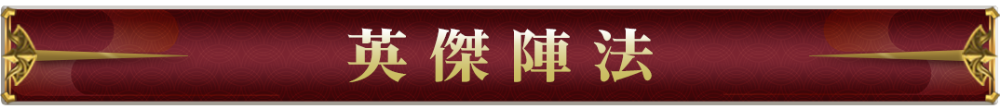
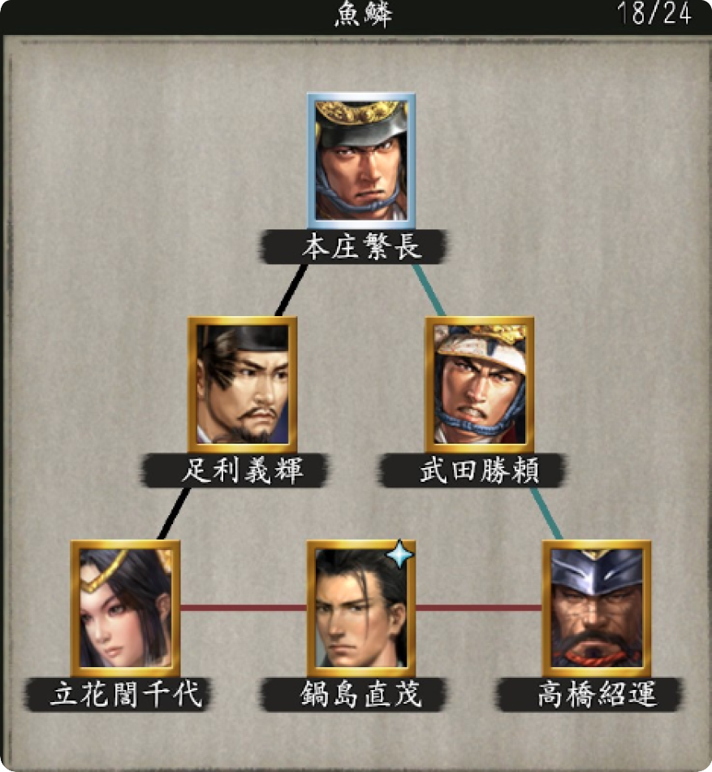
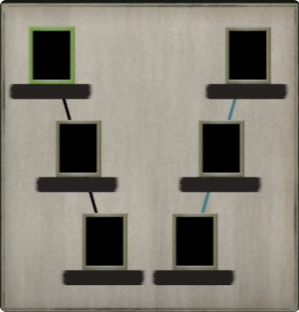
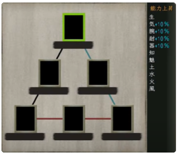
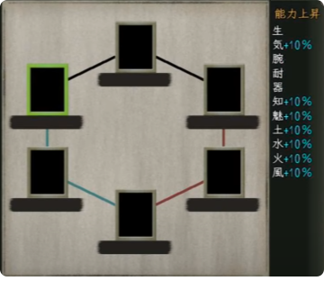

【橫扼之陣】
衡軛陣是古代陣法的一種，與長蛇陣相似。是一種交叉排列的雙列縱隊，旨在限制敵人的行動並實行包圍消滅。通常在山地戰等場合使用。

【鶴翼之陣】
鶴翼陣是古代陣法中的一種。這是一種將雙翼伸展向前，形成“V”字形的陣形。與魚鱗陣形並列，是一種非常常見的陣形。在這個陣形中，將大將放置在中心，當敵人進入雙翼之間時，同時關閉這個間隙以實行包圍和消滅。
然而，對於敵人來說，中心地帶的防禦相對薄弱，大將容易受到攻擊，因此中軍必須忍受雙翼部隊實行包圍之前的時間，這是一種風險。
因此，有一種在中央部分增強陣勢，形成“Y”字型的變體。
這種陣形容易導致極端的勝敗結果，因此在兵力較弱於對方時通常不會使用。這種陣形也有著較多的弱點，對方即使兵力不足也可能從多個方向進攻，這會讓局勢變得不利。
部隊之間的信息傳遞相對困難，因此不適合對於突如其來的情況靈活應對。
在實戰中，德川家康在三方原之戰中使用這種陣形對抗武田信玄，但遭受了慘敗。在第四次川中島之戰中，武田信玄的本隊使用了鶴翼陣形抵禦上杉謙信以車掛陣形發動的攻勢，一直堅持到別動隊返回之前。

【魚鱗之陣】
魚鱗陣是古代陣法中的一種。陣形是一種中心前突，兩翼後縮的陣形，士兵的排列形成"△"字型。
中央底部放置大將，以大將為後方，對抗敵人。由於戰線較狹窄，遊軍較多，且未考慮來自後方的奇襲，所以不適用於大陸平原上的會戰。然而，在山地、森林、河川等地形豐富的日本戰國時代，這種陣形經常被使用。
魚鱗陣形的特點是不是將所有兵力完全編排成一個密集陣，而是將數百人單位的橫隊（密集陣）作為基本單位，以保持個體的機動性，同時確保整體的堅固性，因此得名“魚鱗”。
這種陣形可以讓眾多士兵參與局部戰鬥，即使一支陣被擊敗，下一支陣也可以立即加入戰鬥，因此在持久戰中有很強的優勢。
然而，由於使用了橫隊，容易受到兩側甚至後方的攻擊而造成混亂，同時也容易被包圍，不適用於被多個敵軍包圍的情況。
特別是在面對兵力較少的敵人時，魚鱗陣形的正面突破效果更為明顯。此外，它不僅在正面防禦時表現出色，而且由於部隊之間的信息傳遞相對容易，也適合於機動作戰。
陣形是一種中心前突，兩翼後縮的陣形，士兵的排列形成"△"字型。
中央底部放置大將，以大將為後方，對抗敵人。
由於戰線較狹窄，遊軍較多，且未考慮來自後方的奇襲，所以不適用於大陸平原上的會戰。然而，在山地、森林、河川等地形豐富的日本戰國時代，這種陣形經常被使用。
在實戰中，武田信玄在三方原之戰中使用魚鱗陣形對抗德川家康，並成功擊敗了對方。而家康在後來的關原之戰中以魚鱗陣形對抗武田信玄使用的鶴翼陣形。

【方圓之陣】
方圓陣是古代陣法中的一種。大將位於陣形中央，外圍兵力層層布防，長槍、弓箭在外，機動兵力在內，與優勢敵軍交戰時使用。
環繞著大將中心畫出圓形的陣形，可以應對來自所有方向的敵人奇襲，是一種具有防禦性的陣形。
然而，這種陣形不適合用於移動，而更適合迎擊敵人的進攻。
由於士兵被分散開來，不適合長時間應對局部攻擊，如果受到攻擊，就需要立即轉換成其他陣形進行戰鬥。
而且，如果想要主動攻擊敵人，也不適合使用這種陣形。